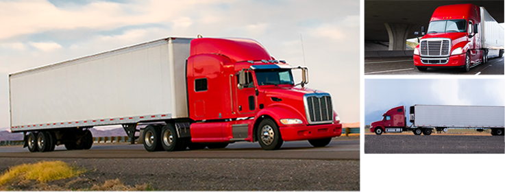
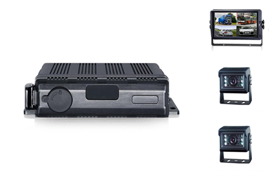

Semi-Trailer Truck
Semi-Trailer Truck
Reversing, manoeuvring or making a right-hand turn can create potentially dangerous situations for truck drivers. Despite all the available mirrors, the truck driver does not have the necessary view into all dangerous zones.
Our cameras support the driver by covering every possible blind spots; making the approach to loading and unloading areas easier. Consequently, preventing accidents and saves costs through simple and fast operating procedures.
 Key Benefits
- Increased safety and road awareness
- Easier for driver’s manoeuvring
- Zero blind spots